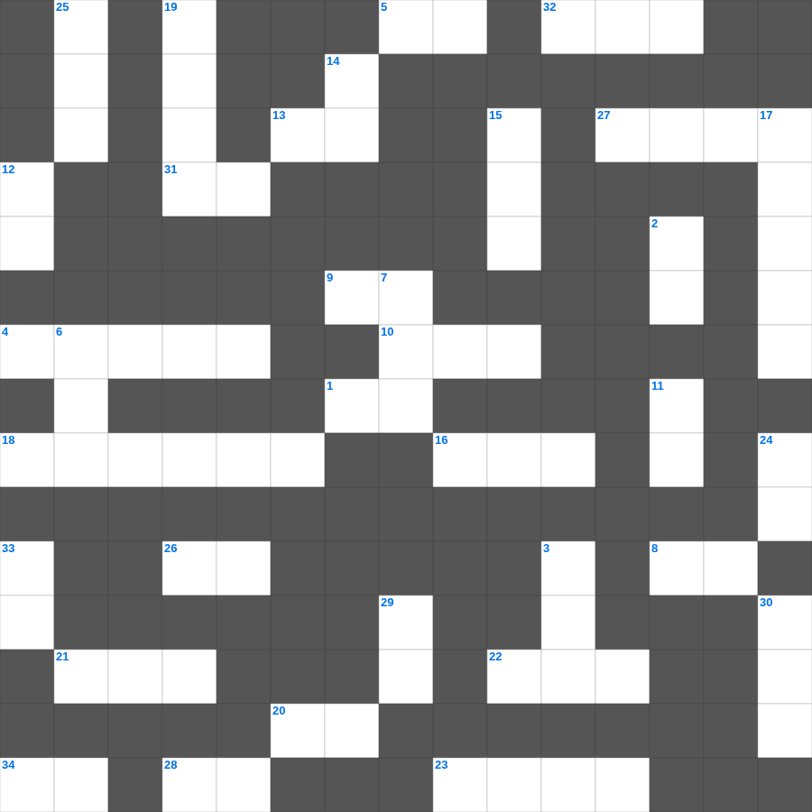

성경의 분류 (상식)
📌 서비스 정의
십자가로세로는 교회 주보와 주일학교에서 사용할 수 있는 성경 기반 가로세로 퍼즐 서비스입니다. 성경 인물, 사건, 핵심 구절을 바탕으로 제작되었습니다. 온라인 풀이 및 인쇄 기능을 제공합니다.
성경의의 말씀을 퀴즈로 배우는 성경의 낱말 퍼즐입니다. 가로 힌트와 세로 힌트를 보고 35개의 단어를 맞춰보세요. 인쇄도 가능하고 정답 확인도 바로 되니 소그룹 모임이나 가정 예배 시간에도 활용하실 수 있습니다.

📝 가로 힌트
1. 애통하는 자는 복이 있나니 그들이 이것을 받을 것임이요
4. 남은 조각을 거둔 바구니의 수
5. 영들 분별함과 각종 이것 말함
8. 믿음은 바라는 것들의 이것
9. 물고기 배 속에서 회개한 선지자
10. 이스라엘이 광야에서 보낸 시간(년)
13. 제물을 통째로 태워 드리는 제사
16. 제사장이 손발을 씻는 놋 그릇
18. 도끼가 물 위에 떠오른 기적
20. 마음이 이것한 자는 하나님을 볼 것임
21. 가룟 유다가 예수님을 넘겨준 신호
22. 야곱이 축복을 받기 위해 팔에 붙인 것
23. 인류 최초의 옷은 무슨 잎으로 만들었나?
26. 예수님이 십자가에서 돌아가신 사건
27. 요나를 삼켰던 존재
28. 예수님이 구름을 타고 하늘로 올라가심
31. 여호와 이것: 치료하시는 하나님
32. 예수님이 변화되신 산
34. 혼인 잔치에 이것을 입지 않은 사람
📝 세로 힌트
2. 야곱이 사다리 환상을 본 곳
3. 언약궤를 모셔두는 가장 거룩한 장소
6. 함께 가져온 물고기의 마리 수
7. 죽은 지 나흘 만에 살아난 사람
11. 십계명이 새겨진 것
12. 동방 박사들이 드린 세 가지 예물 중 하나
14. 곡물로 드리는 제사
15. 용서할 때 일흔 번씩 몇 번까지?
16. 오직 정의를 이것 같이 흐르게 할지어다
17. 바울과 실라가 감옥에서 한 행동
19. 성경 인물 중 가장 장수한 사람은?
24. 친구를 위하여 자기 이것을 버리면 이보다 큰 사랑이 없음
25. 예수님이 자라나신 동네
29. 예수님이 광야에서 40일간 받으신 것
30. 나일강이 피로 변한 첫 번째 재앙
33. 곳곳에 기근과 이것이 있으리니
🧑🏫 교회 교육 자료 활용
이 퍼즐은 주일학교 교재 추천 자료로 활용할 수 있고, 주일학교 주보에 넣기 좋은 분량으로 구성되어 있습니다. 수업용 주일학교 교안에 활동지로 붙이거나, 예배 후 복습용 주일학교 공과교재로 바로 사용할 수 있습니다.
🏷️ 키워드
성경의 낱말 퍼즐, 성경의, 십자가로세로, 성경퀴즈, 말씀퀴즈, 가로세로퍼즐, 주일학교 교재 추천, 주일학교 주보, 주일학교 교안, 주일학교 공과교재